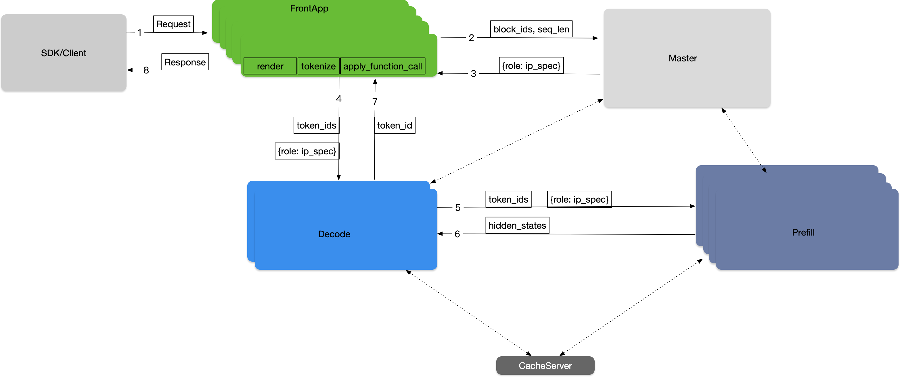

FlexLB (Flexible Load Balancer) - Master Role#
Background#
FlexLB (Flexible Load Balancer) is the Master role in RTP-LLM’s distributed inference framework. It implements a multi-dimensional Quality of Service (QoS) Load Balance strategy for large model inference, coordinating between inference workers, cache servers, and other components.
The Master role was designed to address the limitations of random load balancing that caused uneven load distribution across machines, improving resource utilization for inference worker clusters scaled between 100-1000 nodes.
System Architecture#

Key Components#
SDK/Client: Core traffic entry point for large models
Request protocol parsing and traffic monitoring
Policy-based cluster selection using Weighted Round Robin
Load Balance Scheduler (Master Role):
Distributed load balancer with Master-Slave Architecture
Real-time scheduling decisions with high availability
Dynamic load balancing based on node metrics (GPU utilization, memory usage, queue length)
State-aware routing with Prometheus/Grafana monitoring integration
FrontApp Cluster:
Independent deployment of Prefill Cluster’s frontend functionality
Handles request rendering and tokenization
Prefill Cluster:
Handles initial input sequence parallel computing tasks
Decoder Cluster:
Handles subsequent generation step parallel inference tasks
Cache Server:
Distributed KV storage system for prefix-aware routing
Load Balancing Strategies#
The Master role implements different load balancing strategies for Prefill and Decode operations to optimize resource utilization and request latency:
Prefill Strategy#
For Prefill requests, the Master selects the optimal node based on:
KV cache hit rate across different machines
Estimated execution time for the request
Waiting time in the queue
The strategy aims to minimize the overall request completion time by choosing the node that can process the request most efficiently
Decode Strategy#
For Decode requests, the Master uses a different approach:
Selects the node with the least KV cache usage
This strategy helps distribute the Decode load evenly across available nodes
Prevents any single node from becoming a bottleneck due to excessive KV cache consumption
These strategies work together to ensure optimal resource utilization and reduced latency across the entire inference pipeline.
Usage#
To use the FlexLB Master role in your RTP-LLM deployment:
Configure the Master node with appropriate cluster settings
Set up monitoring integration with Prometheus/Grafana for state-aware routing
Deploy FrontApp, Prefill, and Decoder clusters
Configure SDK/Client to use Weighted Round Robin for cluster selection
The Master role automatically handles load distribution, prefix-aware routing, and failover scenarios to optimize resource utilization and reduce request latency.
Startup Commands#
1. Build FlexLB#
Navigate to the FlexLB module directory from the project root:
cd rtp_llm/flexlb
Run Unit Tests#
mvn -B test \
-Dmaven.test.failure.ignore=true \
-Derror-prone.skip=true \
-Dautoconfig.skip=true \
-T 1C
Build Package#
mvn clean package -DskipTests -T 1C
2. Docker Image Build#
Prepare Docker Build Context#
After build completion, copy the generated ai-whale.tgz to the Docker build context directory:
# Check build artifacts
ls -la flexlb-api/target/
# Copy to Docker build context
cp flexlb-api/target/ai-whale.tgz APP-META/docker-config/ai-whale.tgz
Build Docker Images#
Base image build:
docker build ./ -f rtp_llm/flexlb/APP-META/docker-config/Dockerfile_base \
-t xx_docs.com/rtp_llm_flexlb_base
Production environment image build:
docker build ./ -f rtp_llm/flexlb/APP-META/docker-config/Dockerfile_production \
-t xx_docs.com/flexlb:latest
3. Run FlexLB#
Start the FlexLB service using the built Docker image:
docker run -d \
--name flexlb-master \
-p 8080:8080 \
xx_docs.com/flexlb:latest
4. Complete Build Script#
The following is a complete build and deployment script example:
#!/bin/bash
echo "=== FlexLB Build and Deploy Script ==="
# Navigate to FlexLB directory
cd rtp_llm/flexlb
echo "=== Step 1: Running Unit Tests ==="
mvn -B test \
-Dmaven.test.failure.ignore=true \
-Derror-prone.
s=true \
-Dautoconfig.skip=true \
-T 1C
echo "=== Step 2: Building Package ==="
mvn clean package -DskipTests -T 1C
echo "=== Step 3: Preparing Docker Build Context ==="
if [ -f flexlb-api/target/ai-whale.tgz ]; then
echo "Copying ai-whale.tgz to Docker build context"
cp flexlb-api/target/ai-whale.tgz APP-META/docker-config/ai-whale.tgz
echo "Successfully copied ai-whale.tgz"
else
echo "Error: ai-whale.tgz file not found"
exit 1
fi
echo "=== Step 4: Building Docker Images ==="
# Build base image
docker build ./ -f APP-META/docker-config/Dockerfile_base \
-t xx_docs.com/rtp_llm_flexlb_base
# Build production image
docker build ./ -f APP-META/docker-config/Dockerfile_production \
-t xx_docs.com/flexlb:latest
echo "=== FlexLB Build Complete ==="